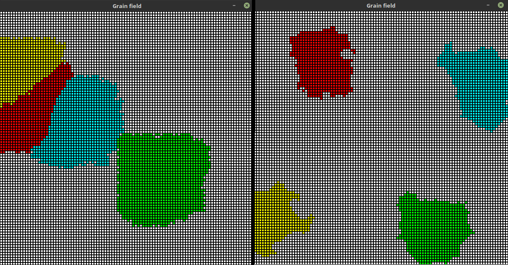

Boundary shape control¶
Probability slider lets user to control the shape of grain boundaries in some way.
Comparison between simulation results for probability values set to 99% (left) and 1% (right) (Image 5).
{kind=link}
Image 5 difference between different probability settings
Algorithm¶
Future state of an empty cell is determined by checking 4 rules:
- 5 or more cells from Moore neighbourhood
- 3 or more cells from nearest Moore neighbourhood
- 3 or more cells from further Moore neighbourhood
- any cell from neighbourhood if probability test is positive
Code¶
-
ca.neighbourhood.decide_by_4_rules(moore_neighbours: ca.neighbourhood.Neighbours, probability=50)[source]¶ Update grain field according to 4 consecutive rules:
- Moore (5-8 cells)
- Nearest Moore (min 3 neighbour cells)
- Further Moore (min 3 neighbour cells)
- Id of cell depends on cell of all neighbours and probability
Parameters: - moore_neighbours – all 8 Moore neighbours
- probability – value used to calculate 4th rule
Returns: output state of the cell (based on neighbours or None if state could not be chosen